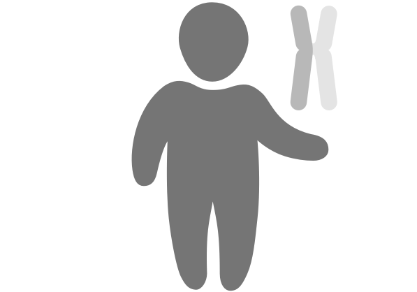

Carrier Testing Reports
Genetic carrier testing results are complicated. We typically
don't have the expertise to understand our
genetic results, let alone know what to do with them. In fact,
the results are often too complex for our doctors to
interpret.
Based on secondary and user research interviewing over 50 patients and clinical professionals,
this framework is a proposed set of design guidelines for delivering
digitized carrier testing results in a way that patients and clinicians can
feel a sense of understanding and empowerment.
Report Examples
To exemplify the design guidelines and associated research findings, the most common carrier testing report types have been populated with synthetic data below. Carrier testing reports will look different depending on who is being tested, and where they are in the conception or prenatal process. The following report examples assume that one individual, whether they currently have a partner or not, has given a sample to be tested as a carrier for a panel of diseases.
-

Marisa
After deciding to have a baby, Marisa chose to include carrier testing in her pre-conception check-up. She tested as unlikely to be a carrier for any diseases on the panel.
-

Oliver
A single man curious about his carrier status, Oliver tested as a carrier for 3 diseases on the panel.
A crucial and dynamic aspect of the carrier testing report is that it incorporates the two sets of results once both partners, or both the partner and donor, have been tested. The reports below include combined results for two individuals.
-

Amelia and Benjamin
After they were married, Amelia and Benjamin decided to get carrier testing done together. Their results show that they are both unlikely to be a carrier for any diseases on the panel.
-

Caroline, Jasmine, and their donor
Caroline and her partner, Jasmine, selected a sperm donor for Caroline's pregnancy. After testing both Caroline and their donor, they found out that only the donor is a carrier for 1 disease.
-
Elias and Danielle
Elias and Danielle decided to be tested as part of their wedding preparations. Their results showed that while they are both carriers for at least 1 disease, they are not carriers for any of the same diseases.
-

Candace and Christopher
After Candace's prental testing revealed that she is a carrier for 2 diseases, her partner Christopher decided to get tested as well. His results show that he is a carrier for 1 of the same diseases as Candace.
How to Use This Tool
-
Clinicians
Let your management and IT teams know about this tool and how it’ll help improve your practice and the patient experience.
Download Example Package
-
Health IT and Developers
Leverage the design guidelines and source code to transform your production service to fit patient and clinician needs.
Use the SCSS
-
Custom Reports
Looking for a carrier testing report or other genomic service designed just for your organization? Let's work together to create something impactful and beautiful.
Let's work together
-
Make it Better
Many eyes makes genetic reporting better. This open source project needs your design, engineering, and clinical critique. Anyone can get involved by providing clinical or patient-focused feedback, joining the community, submitting code, and evolving the service.
Participate
See the Research
Over the course of our research (2014-2017), we have interviewed a sample size of:
16
Clinicians
7
Genetic Counselors
5
Research Scientists
26
Patients
Ecosystem Analysis
As part of the initial stages of the design process, we launched a significant effort to understand the ecosystem of carrier testing services. This included conducting scientific literature research, as well as outlining the customer experience, feature set, and value propositions for the top competitors in the industry to understand what opportunity gaps exist.
Expert Contextual Inquiry
Through our connections with local medical institutions and clinicians, as well as a guerilla effort to acquire more industry experts through social media and survey tools, we conducted exploratory interviews to understand the ecosystem and problem set. These efforts were two-fold. On the patient side, we aimed to understand the customer journey of carrier testing for patients or prospective parents. On the clinician side, we hoped to outline the workflow of OBGYNs, pediatricians, genetic counselors, and any other clinicians involed in carrier testing.
Usability Testing
After translating insights gathered from literature and exploratory primary research into version one for multiple projects, we then approached our interview subjects again to obtain valuable feedback on designs. For all projects involved, this was an iterative process. User feedback was used to evolve designs, which were used to gather more feedback, and so on. We employed the use of few "champion" users, whom we contacted frequently for shorter cycles of feedback and iteration.
Industry Experience
As a software design consultancy, we have worked with Mt. Sinai Hospital, Personal Genome Project, and two other leading genomics organizations to design the digital experience for a variety of genetic testing products. Our one-on-one engagements with some of the top professionals in the industry have provided essential feedback on clinical feasibility and scientific accuracy.
See Documentation
Design Limitations
While this framework accommodates the most common types of autosomal recessive carrier results, it is important to note that not ALL results are currently accommodated. Below are important limitations in the report capabilities.
- Sample patient, disease, limitations, and test detail content in the report designs should be specific to your organization, and is therefore synthetic and not intended for production.
- Non-autosomal recessive disease carrier status (X-linked, autosomal dominant, mitochondrial, deNovo, etc.) is not supported.
- Care team permissions design is to be determined.
- Disease detail design is to be determined.
- This framework is designed to convey results to patients accompanied by clinician support.
Who We Are

GoInvo helps healthcare technology companies design magical software for personalized medicine. We work with organizations such as 3M, Johnson & Johnson, Walgreens, WuXi NextCODE, Mount Sinai Hospital, Partners Healthcare, National Insititutes of Health, Personal Genome Project, and AstraZeneca. We’re located in Arlington, Massachusetts.
Open source design template for carrier test reporting from GoInvo, 2017.
Licensed under the Apache License, Version 2.0.